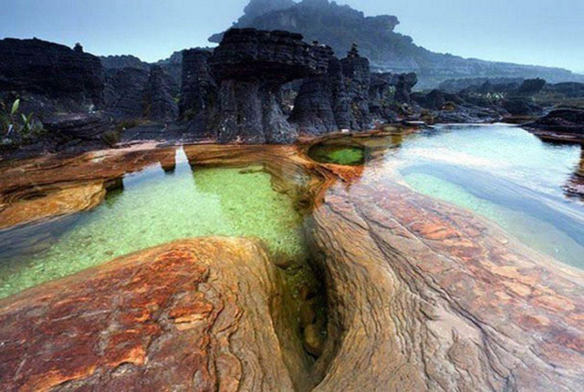

Roraima é o estado mais ao norte do Brasil, na Região Norte, fazendo fronteira com a Venezuela e a Guiana. A capital é Boa Vista, a única capital brasileira localizada totalmente no hemisfério norte. Grande parte do território é coberta pela Floresta Amazônica, com áreas de cerrado e savanas. A economia é baseada na agricultura, pecuária, mineração e comércio, além de contar com uma população indígena significativa que preserva suas tradições. O clima é quente e úmido durante a maior parte do ano. Roraima tem belezas naturais como o Monte Roraima, uma famosa formação rochosa que também é ponto turístico importante.
